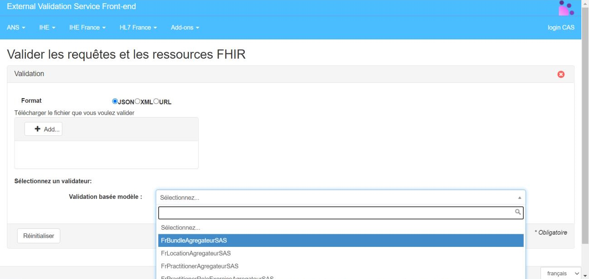

Service d'Accès aux Soins
1.0.0 - ci-build

Service d'Accès aux Soins
1.0.0 - ci-build

Service d'Accès aux Soins - Local Development build (v1.0.0) built by the FHIR (HL7® FHIR® Standard) Build Tools. See the Directory of published versions
Cette requête s’appuie sur le flux 3A du volet d’agenda partagé du CI-SIS volet Gestion Agenda Partagés.
Endpoint |
|
Header |
Accept: application/json+fhir |
Encodage |
UTF-8 |
Version FHIR |
4.0.1 |
Version package |
|
Publication |
|
Interaction FHIR |
Search[1] |
Méthode http associée |
GET |
Ressource recherchée |
Slot |
Construction requête de base |
|
[1] https://www.hl7.org/fhir/http.html#search et https://www.hl7.org/fhir/http.html#general
Cette réponse s’appuie sur le flux 4A du volet d’agenda partagé du CI-SIS.
Lien vers la spécification FHIR : https://www.hl7.org/fhir/bundle.html
Si la recherche est un succès, le serveur répond :
Un header avec un code 200 OK HTTP
Un body contenant une ressource Bundle dont le type =
searchset.
Le bundle encapsule 0 à n ressources Slot corespondant aux
critères de recherche plus les ressources incluses correspondant aux
critères de recherche.
Le service indique le total trouvé dans une balise total.
Dans le cas où il n’y a pas de résultat le service renvoie total: 0.
Remarque : la recherche est un succès à partir du moment où la requête peut être exécutée. Il peut il y avoir 0 à n correspondances.
Plus de précision sur la spécification FHIR : https://www.hl7.org/fhir/http.html
Lien vers la spécification FHIR : https://www.hl7.org/fhir/operationoutcome.html
Si la recherche échoue, le serveur doit répondre :
Un header avec un un code erreur HTTP 4XX ou 5XX
Un body contenant une ressource OperationOutcome[^3] qui donne les détails sur la raison de l’échec
Remarque : l’échec d’une recherche est la non-possibilité d’exécuter la requête, ce qui est différent d’aucune correspondance à la recherche. Plus de précision sur la spécification FHIR : https://www.hl7.org/fhir/http.html
ID |
Description |
Paramètre |
Type |
Obligatoire |
Cardinalité |
1 |
Date de début de la recherche de créneaux |
start |
date |
Oui |
1..1 |
2 |
Date de fin de la recherche de créneaux |
start |
date |
Oui |
1..1 |
3 |
Liste des identifiants nationaux des PS (le préfixe correspondant à l'identifiant sera transmis (2)) |
schedule.actor |
token |
Oui |
1..25 |
4 |
Statut des créneaux |
status |
token |
Oui |
1..1 |
Par ailleurs, en complément des ressources Slot, afin de récupérer l’ensemble des informations qui leur sont rattachées et qui seront potentiellement exploitées par le SAS, deux paramètres supplémentaires sont exploités :
_include=Slot:schedule indique qu’il est nécessaire de transmettre les ressources Schedule associées aux Slot. La présence de cette ressource est nécessaire pour permettre de faire le lien entre le créneau (Slot) et les ressources Practitioner et PractitionerRole associées._include:iterate=Schedule:actor indique qu’il est nécessaire de transmettre les ressources actor référencées dans les ressources Schedule transmises. En particulier, les ressources Practitioner et PractitionerRole (incluant la ressource Location dans une élément “contained”) sont attendues.La requête ci-dessous correspond à une recherche de créneaux disponibles entre le 02 janvier 2021 à 10h et le 06 janvier 2021 à 10h pour les PS correspondant aux RPPS préfixés : 810101288385, 800001288385 ou 810106738385.
Requête :
get[BASE]/Slot?_include=Slot:schedule&_include:iterate=Schedule:actor&start=ge2021-01-02T10:00:00&start=le2021-01-06T10:00:00&schedule.actor:Practitioner.identifier=urn:oid:1.2.250.1.71.4.2.1|810101288385, urn:oid:1.2.250.1.71.4.2.1|800001288385,urn:oid:1.2.250.1.71.4.2.1|810106738385&status=free
Réponse simplifiée :
HTTP 200 OK resourceType: Bundle type: searchset total: 4 Slot1 (match) Schedule1 Practitioner1 PractitionerRole1 Slot2 (match) Schedule2 Practitioner2 PractitionerRole2 Slot3 (match) Schedule3 Practitioner3 PractitionerRole3 Slot4 (match) Schedule4 Practitioner4 PractitionerRole4
Corps de la réponse complète :
La réponse ci-dessous correspond à :
Visite de contrôleVisite urgenteVisite de contrôleVisite de contrôle et Consultation de suivi pneumologiquePour consulter l’exemple en plein écran, cliquer ici.
Cette section détaille les nomenclatures à utiliser afin de renseigner les différents éléments codifiés de la réponse.
free.coding, ou sous la forme d’un texte libre au niveau de l’élément text.origin à l’URL transmise par l’éditeur au moment de la redirection pour identifier la provenance.Le validateur mis à disposition des développeurs dans le cadre du projet SAS offre la possibilité tester le format des bundles de réponse générés. Il permet de vérifier que les réponses sont correctement formatées, que l’ensemble des informations obligatoires sont bien présentes et que les données codifiées exploitent les bonnes nomenclatures. Pour que le validateur puisse effectuer correctement les contrôles au niveau de la structure, il est nécessaire de renseigner pour chacun des “resourceType” correspondant, le meta.profile “URL” ci-dessous :
Ci-dessous un exemple :
"resourceType": "Bundle",
"id": "8cbb33dc-779e-45e9-a5f6-ea66101288c5",
"meta": {
"profile": [
"http://sas.fr/fhir/StructureDefinition/BundleAgregateur"
]
},
Le validateur est disponible sur l’espace de test de l’ANS : https://interop.esante.gouv.fr/evs/fhir/validator.seam?standard=37. Pour faciliter les tests et conserver l’historique, nous vous recommandons de créer votre compte sur la plateforme.
Afin de tester un fichier, il suffit de sélectionner le format JSON, d’ajouter le fichier via le bouton Add…, de sélectionner le modèle FrBundleAgregateurSAS puis de cliquer sur valider :
|

|
| Figure 1 - Accès au validateur agrégateur de créneaux |
Vous obtiendrez alors un rapport de test mettant en valeur les erreurs bloquantes et les différents warnings :

|
| Figure 2 - Rapport validateur agrégateur de créneaux |